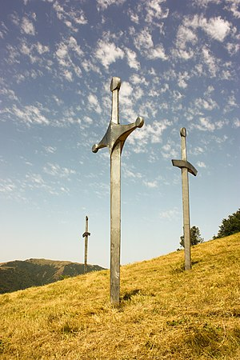

ქართველთა ბრძოლა დავით IV აღმაშენებლის მეთაურობით თურქ-სელჩუკთა კოალიციური ლაშქრის წინააღმდეგ დიდგორის ველზე (მანგლისის მახლობლად, თბილისის მისადგომებთან). საქართველოს ისტორიაში დიდგორის ბრძოლა უდიდეს გამარჯვებათა რიცხვს მიეკუთვნება. სხვადასხვა წყაროში დაცულია განსხვავებული ცნობები ლაშქრების სიდიდის შესახებ, თუმცა როგორც ქართულ-სომხურ-ლათინური, ასევე თვით არაბული წყაროების მიხედვით თურქ-სელჩუკთა კოალიციური ლაშქარი ბევრად აღემატებოდა ქართულს. დავით აღმაშენებლის ისტორიკოსმა მტრის ლაშქარი „ქვიშა ზღვისა“-ს შეადარა. დიდგორის ველზე ილღაზის სელჩუკთა კოალიციური ლაშქრის დამარცხების, მისი დევნისა და საბოლოოდ განადგურების შემდეგ, დავით აღმაშენებელს გზა გაეხსნა თბილისისაკენ. მოგვიანებით, 1122 წელს — თბილისის, ხოლო 1123 წელს დმანისის აღება დიდგორის ბრძოლის გაგრძელებას წარმოადგენდა. დიდგორის ბრძოლაში გამარჯვებამ შესაძლებელი გახადა ქვეყნის საბოლოო გათავისუფლება და დასაბამი მისცა ოქროს ხანას საქართველოს ისტორიაში, ამასთანავე, საქართველომ საბოლოოდ დაიმკვიდრა რეგიონის უძლიერესი სახელმწიფოს სახელი. აისტორიო წყაროებში დიდგორის ბრძოლის დაწყების დღე და რიცხვი სხვადასხვანაირადაა წარმოდგენილი. ასე, მაგალითად, დავითის ისტორიკოსის თხზულების XV და XVIII საუკუნეების გადანაწერებში 18 აგვისტოა დასახელებული, ხოლო XVII საუკუნისა და XVIII საუკუნის ზოგ გადანაწერში — 12 აგვისტო. აღსანიშნავია, რომ დავითის ისტორიკოსის ძველ სომხურ თარგმანში, რომელიც მკვლევართა აზრით, XII საუკუნეშივეა შესრულებული, აგრეთვე 12 აგვისტოა მითითებული. როგორც ჩანს, დავითის ისტორიკოსის თხზულების თავდაპირველ ხელნაწერში სწორედ 12 აგვისტო ყოფილა. ამ მოსაზრებას ამყარებს მათე ურჰაელის მონაცემებიც. იგი არა მარტო თვესა და რიცხვს, ბრძოლის დღესაც კი ასახელებს, რაც წყაროთა მონაცემების დაზუსტების საშუალებას იძლევა. ურჰაელის თხზულების ერთი (1869 წლის) გამოცემის მიხედვით, ბრძოლა მომხდარა 1121 წლის 15 აგვისტოს, „ღვთისმშობლის მარხვის ხუთშაბათს დღეს“, მეორე, 1898 წლის გამოცემის მიხედვით კი — 13 აგვისტოს, ხუთშაბათს.[24] როგორც ჩანს, მათე ურჰაელის თხზულებასაც დავითის ისტორიკოსის თხზულების ბედი გაუზიარებია, მის შემდეგდროინდელ გადამწერებს რიცხვები აურევიათ, რადგან ხუთშაბათი დღე არ ყოფილა 1121 წლის არც 15-სა და არც 13 აგვისტოს.[24] ხუთშაბათი დღე იმ წლის აგვისტოს ზემოდხსენებული რიცხვებიდან (12-დან 18-მდე) 11-12-სა და 18-19 აგვისტოზე მოდიოდა, მაგრამ რადგან 18-სა და 19 აგვისტოს „ღვთისმშობლის მარხვა“ უკვე დამთავრებული იყო, ზემოდხსენებულ რიცხვთა შორის „ღვთისმშობლის მარხვის ხუთშაბათს დღედ“ მხოლოდ 12 აგვისტო შეიძლება მივიჩნიოთ, მით უფრო, რომ ამასვე გვთავაზობს დავითის ისტორიკოსის თხზულების დედანი და მისი უძველესი სომხური თარგმანიც.

დიდგორის ველზე კოალიციური ლაშქრის დამარცხების, მისი საკმაოდ ხანგრძლივი დევნისა და საბოლოოდ განადგურების შემდეგ, დავით აღმაშენებელს გზა გაეხსნა თბილისისაკენ. დიდგორის ბრძოლაში მეფემ დაამარცხა არა მარტო თურქ-სელჩუკთ ა კოალიციური ლაშქარი, არამედ იმ ქალაქების დამოუკიდებლობაცა და გაერთიანებაც, რომლებიც საქართველოში კოალიციურ ლაშქარს იწვევდნენ დავითის წინააღმდეგ. დიდგორის ველზე არსებითად გადაწყდა თბილისის, დმანისისა და სხვა ქალაქთა ბედიც, იწყებოდა მათი დამოუკიდებლობის აღსასრული. მას შემდეგ, რაც საქართველოს ქალაქების კავშირმა (თბილისმა და დმანისმა) ასეთი დიდი ომი გაუმართა სამეფო ხელისუფლებას, დავითი სავსებით დარწმუნდა, რომ საქართველოს ჯერ კიდევ დამოუკიდებელი ქალაქები უბრძოლველად არ დასთმობდნენ პოზიციებს და მათ კიდევ ახალი დამხმარე ძალების მოწვევა რომ არ ეცადათ, მეფემ გეზი პირდაპირ თბილისისაკენ აიღო. 1122 წელს თბილისის, ხოლო 1123 წელს დმანისის აღება, არსებითად, სწორედ დიდგორის ბრძოლის გაგრძელებას წარმოადგენდა
more info